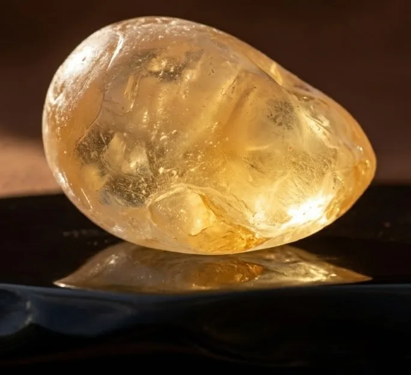

Treasures of Nature · 1
Frankincense, tears of gold
For thousands of years frankincense was never just a passing scent. It was the lifeblood of trade, a cornerstone of religious ritual and an essential of traditional medicine.
By Mohamed Abdo · Perfume designer

Translated from the Arabic original. Read it in Arabic
Part 01Introduction
The Arab world is rich in natural treasures that have long stood for wealth and for the singularity of its land, from vast palm oases to coasts and mountains that yield the most precious aromatic and medicinal goods. Among them frankincense stands out as one of the earth’s greatest and oldest gifts. For thousands of years it was never just a passing scent: it was the lifeblood of trade, a cornerstone of religious ritual and an essential of traditional medicine across the ancient civilisations.
Scientifically, frankincense is the aromatic gum resin of Boswellia. It held a high place in the Arab world and across the ancient world; trees such as Boswellia frereana, found only in Somalia, became famous for the finest resin, known for its large drops (its frozen tears), long chewed as a gum in the Arab region and still today.

Ancient history wove great trade routes just to carry these “golden tears” from their homes in the Arabian Peninsula and the Horn of Africa to the palaces and temples of ancient Egypt, Mesopotamia and the Greek and Roman empires. Today, while it keeps that ancient standing, frankincense has taken on modern roles in fine perfumery, aromatherapy and alternative medicine. Amid this heritage, modern science keeps working to decode the chemistry of these aromatic resins, linking an old inheritance to precise laboratory analysis that fixes their identity and chemical types.
Part 02The best-known frankincenses and their names
Frankincenses are many, and their names vary with the species within the genus Boswellia and with the land where these trees, adapted to arid conditions, grow. These are the best known, with their chemistry:
- 01
Boswellia papyrifera
Ethiopia · Eritrea · SudanFound mainly in Ethiopia, Eritrea and Sudan. The essential oil distilled from its resin is clearly dominated by octyl acetate, with octanol to a lesser degree.
- 02
Boswellia sacra
also Boswellia carteriOman · Yemen · SomaliaGrows in Oman, Yemen and Somalia. Its oil varies, usually led by α-pinene, α-thujene or limonene, often with notable amounts of myrcene, sabinene, viridiflorol, β-caryophyllene or p-cymene.
- 03
Boswellia frereana
MaydiSomaliaFound only in Somalia, and one of the most traded and best-known frankincenses in the world. It is known locally and worldwide as “maydi”, and gives large resin drops long chewed as a gum in the Arab world. Recent analyses of samples from single trees show that its oils share one, variable chemical type, with moderate to high α-thujene (14.5%–43.9%), varying and notable α-pinene (3.0%–63.0%), and no methoxyalkanes at all.
- 04
Boswellia occulta
SomaliaA species documented only recently, in Somalia. Its oil is rich in methoxydecane and methoxyoctane, compounds that are exceptional and unusual in plant essential oils. Its resin is often mixed in trade with that of B. frereana and B. sacra.
In a market where species and names are mixed, precise scientific knowledge remains the truest witness to the authenticity of Somali frankincense.Mohamed Abdo
Part 03What do these compounds tell us?
To answer that question, Johnson and colleagues at the Aromatic Plant Research Center in the United States carried out a study in 2021, titled:
It set out to get past the limits of earlier studies, which relied only on mixed commercial samples, by analysing samples taken directly from 12 single Boswellia frereana trees in Somalia. The presence of these compounds, in their particular proportions, reveals the plant’s true chemical type and shows how the active components are distributed, both in the essential oils and in the dichloromethane extracts. Here is each main compound, with its effect on scent and its therapeutic effect according to the scientific literature:
In the essential oil
In the resin (dichloromethane extract)
Source: the article’s table, after Johnson et al. (2021).
The compounds one by one. Tap any of them for its effect on scent and its therapeutic effect.
01α-Thujene14.5–43.9% in the oil
- Share in the study
- From 14.5% to 43.9% in the essential oils, and from 3.6% to 12.9% in the extracts.
- Effect on scent
- Woody, herbal and fresh notes with a sharp, clean character, like pine and light spice.
- Therapeutic effect
- Known to be antimicrobial and anti-inflammatory; it adds to the therapeutic effect of essential oils used in aromatherapy.
02α-Pinene3.0–63.0% in the oil
- Share in the study
- Very wide variation: from 3.0% to 63.0% in the essential oils, and from 0.4% to 13.9% in the extracts.
- Effect on scent
- A strong, fresh, cleansing pine scent: the iconic smell of pine trees and of traditional frankincense.
- Therapeutic effect
- Studies point to it as a strong bronchodilator, an effective anti-inflammatory and an expectorant; it also helps memory and alertness and eases nervous tension.
03Limonene0.5–2.7% in the oil
- Share in the study
- From 0.5% to 2.7%.
- Effect on scent
- A fresh, diffusive citrus scent, like lemon and orange peel, that gives perfumes a lively, bright character.
- Therapeutic effect
- Research suggests strong antioxidant properties; it calms anxiety, helps the mood and supports the immune system.
04MethoxydecaneNot detected
- Share in the study
- Not found at all in this study, which used samples from a single source. That explains why other studies did find it: adulteration and mixing with other frankincense trees, such as occulta, which grows only in Somalia.
- Scientific meaning
- An ether alkane that is exceptional and very rare in plants, found to mark Boswellia occulta in particular. Finding it in commercial oils sold as other species confirms that resins from the region are being mixed in trade.
- Effect on scent
- A distinctive, sharp aromatic signature that clearly changes the scent of mixed commercial products.
05Lupeol14.7–32.5% in the resin
- Share in the study
- One of the main triterpenoids, at high levels in the extracts: from 14.7% to 32.5%.
- Effect on scent
- Not volatile, so it adds nothing directly to the scent in the air, but it gives the resin depth and staying power.
- Therapeutic effect
- Lupeol draws wide medical interest for promising anti-cancer properties, strong antioxidant action, and its ability to speed wound healing and ease skin and joint inflammation.
06α-Amyrin and β-Amyrin13.0–25.2% · 5.3–8.0%
- Share in the study
- α-Amyrin from 13.0% to 25.2%, β-amyrin from 5.3% to 8.0%, in the extracts.
- Effect on scent
- Non-volatile resin compounds that shape the resin’s physical character and its texture when chewed or burned.
- Therapeutic effect
- Pharmacological studies show that the amyrins are anti-inflammatory and pain-relieving, close in effect to some conventional painkillers, and that they help protect liver cells and reduce oxidative stress.
073-epi-Lupeol6.4–14.2% in the resin
- Share in the study
- Notable, steady levels in the extracts: from 6.4% to 14.2%.
- Therapeutic effect
- An important lupeol derivative that adds to the medicinal value of the resin extracts through its anti-inflammatory and anti-tumour activity.


Part 04Conclusion
This study gives a clear scientific picture of what sets genuine Boswellia frereana apart. By relying on samples from one trusted source and analysing each tree on its own, it set a reference chemical fingerprint for the species, and at the same time exposed the commercial mixing that had confused earlier studies.
In practice, genuine frereana is rich in α-pinene and α-thujene in its oil and in lupeol and the amyrins in its resin, and it contains no methoxydecane. Natural variation between trees is large, so a GC-MS analysis of every batch is the most precise way to ensure authenticity and steady quality.
These findings matter to the perfumer and to the buyer alike. The first needs to know what to expect from the raw material to build a stable formula; the second deserves genuine frankincense, as it was described. In a market where species and names are mixed, precise scientific knowledge remains the truest witness to the authenticity of Somali frankincense and to its aromatic and therapeutic worth.

From the houseMaydi Botanicals: maydi frankincense from its source in Somalia, sorted by hand.Visit Maydi Botanicals